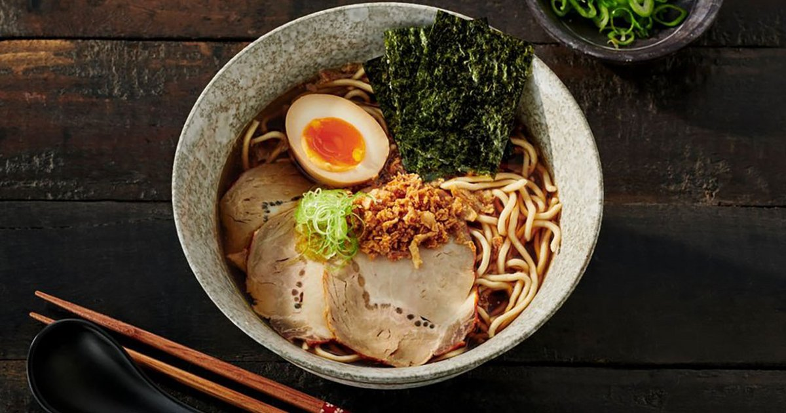
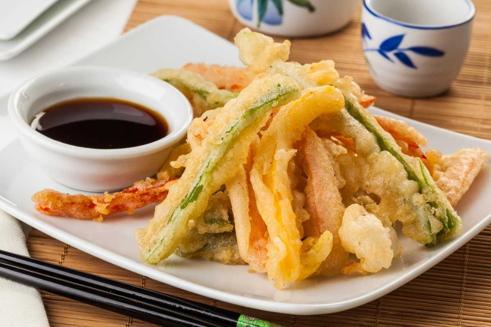

Gastronomía Japonesa

Sushi
El arte del arroz combinado con pescado fresco y mariscos.

Ramen
Un plato reconfortante de fideos en caldo con diversos toppings.

Tempura
Mariscos y vegetales fritos en una masa ligera y crujiente.